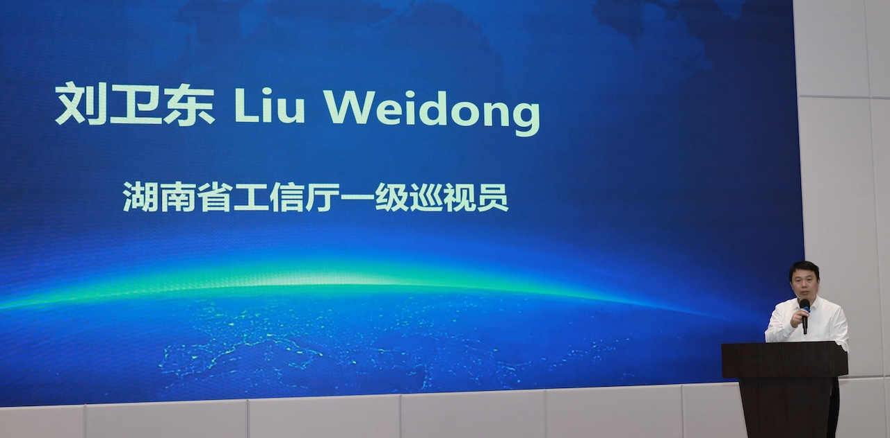
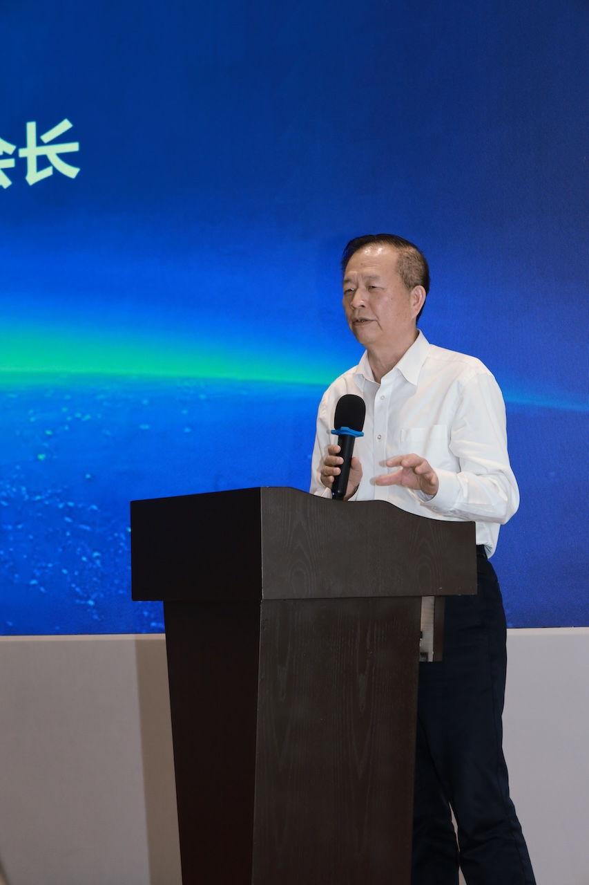
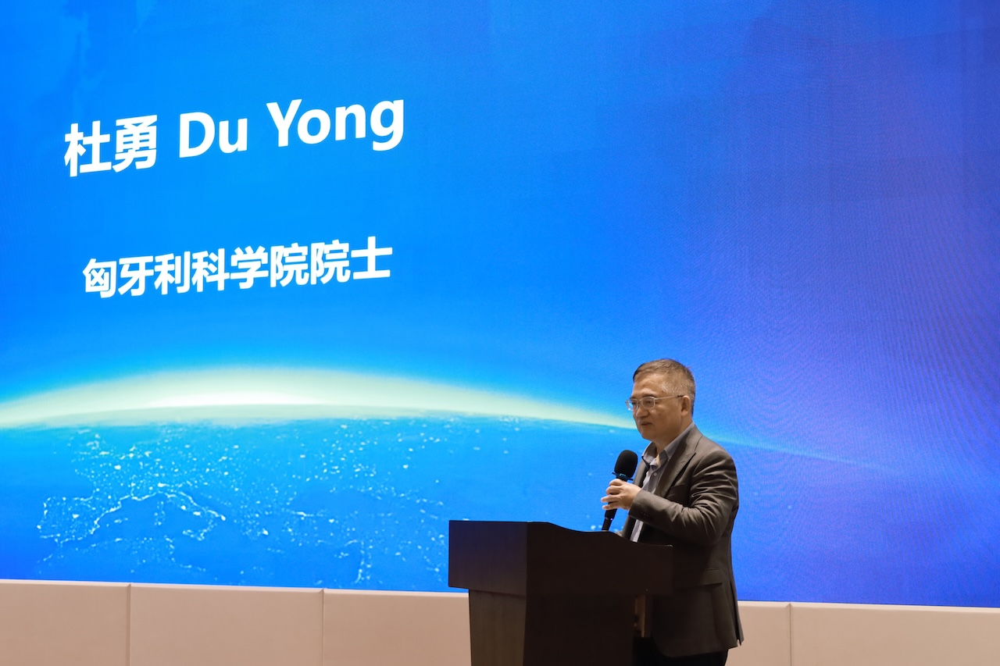
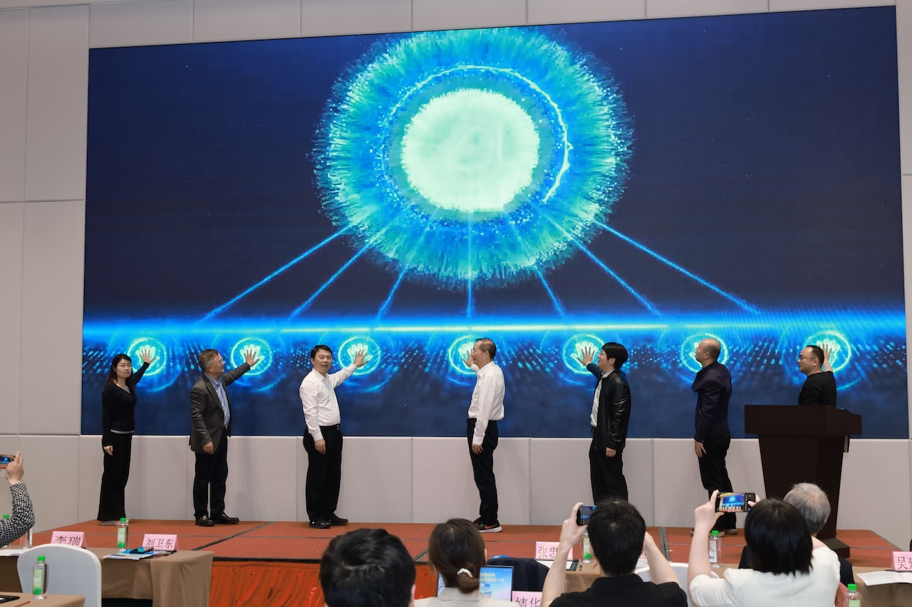
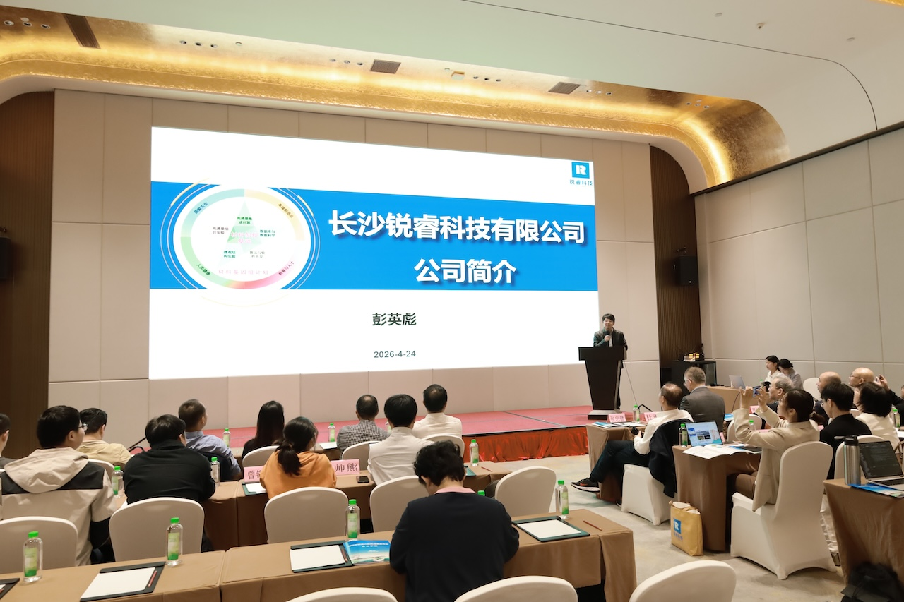
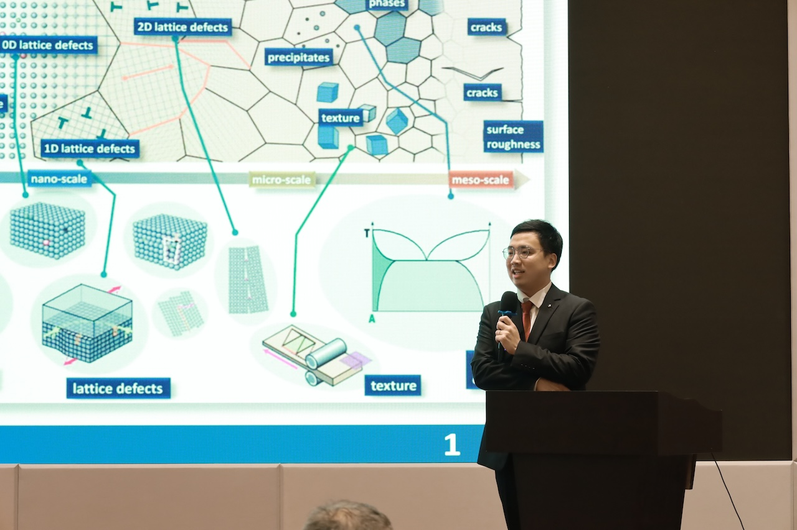
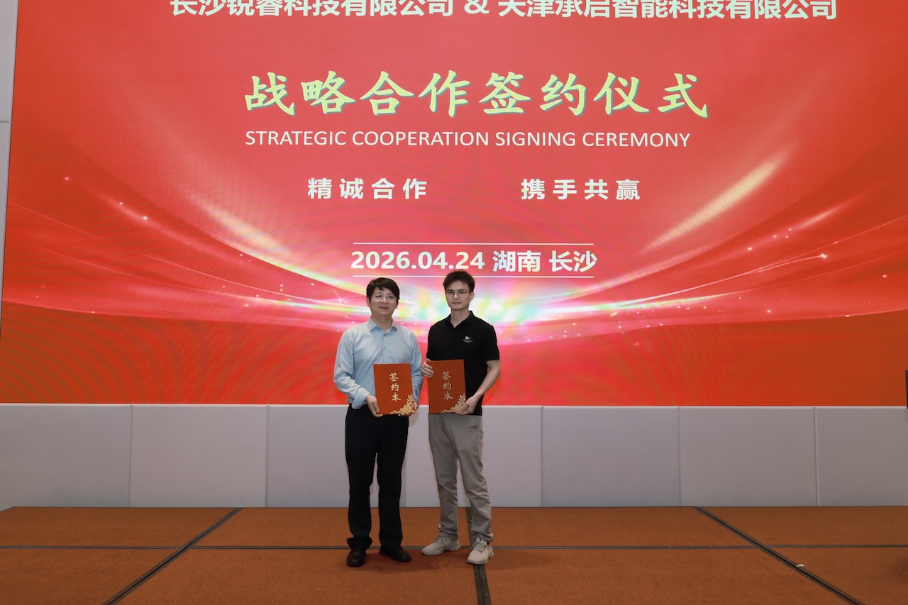

打通材料研发全链条，构建自主可控工业软件体系——长沙锐睿科技7款材料智能设计软件成果发布会成功举行
2026年4月24日，长沙锐睿科技有限公司在岳麓区大学城温德姆花园酒店成功举办“材料智能设计软件成果发布会”。本次大会面向产业界正式发布7款自主研发的材料智能设计软件，覆盖相图热力学计算、热物性计算、扩散动力学、微结构模拟及晶体塑性分析等关键领域，标志着我国在材料计算工业软件领域已初步形成从原子尺度到工程尺度的全链条自主解决方案。来自政府、高校、科研院所及产业界的50余位专家与企业代表出席会议，共同见证国产工业软件的重要进展。 湖南省工信厅一级巡视员刘卫东、匈牙利科学院院士George Kaptay教授（线上）、匈牙利科学院院士杜勇教授，以及株洲硬质合金产业协会执行会长张忠健等领导与专家出席并致辞。多位专家在致辞中指出，材料计算软件长期依赖国外，存在“算法黑箱、数据库封闭”等问题，本次发布的软件体系，在算法自主、数据库自研、工程应用落地等方面实现突破，对推动我国高端制造与新材料产业发展具有重要意义。





发布会正式发布7款自主研发的材料智能设计软件，覆盖相图热力学计算、热物性计算、扩散动力学、微结构模拟及晶体塑性分析等关键领域：
- ICALPHAD——相图与热力学计算软件
- CALTPP扩散模块——多组元扩散计算软件
- CALTPP粘度模块——液相粘度计算软件
- CALTPP热导率模块——热导率计算与反向设计软件
- MID-NANO——纳观尺度微结构模拟软件
- MID-MESO——介观尺度相场模拟软件
- CPCP——晶体塑性有限元软件


技术亮点
- 自主可控：核心算法与数据库完全自研
- 多尺度贯通：原子→纳米→介观→宏观
- AI赋能：参数优化、计算加速、反向设计
软件已在硬质合金、铝合金、高温材料及多相复合材料领域得到应用，现场举行战略合作签约仪式，推动“软件+数据库+工程服务”生态建设。

长沙锐睿科技通过七款软件打通材料设计关键环节，为我国新材料研发提供自主、安全、可持续的技术底座。随着技术迭代，国产材料软件将逐步走向更广阔的工业应用场景。